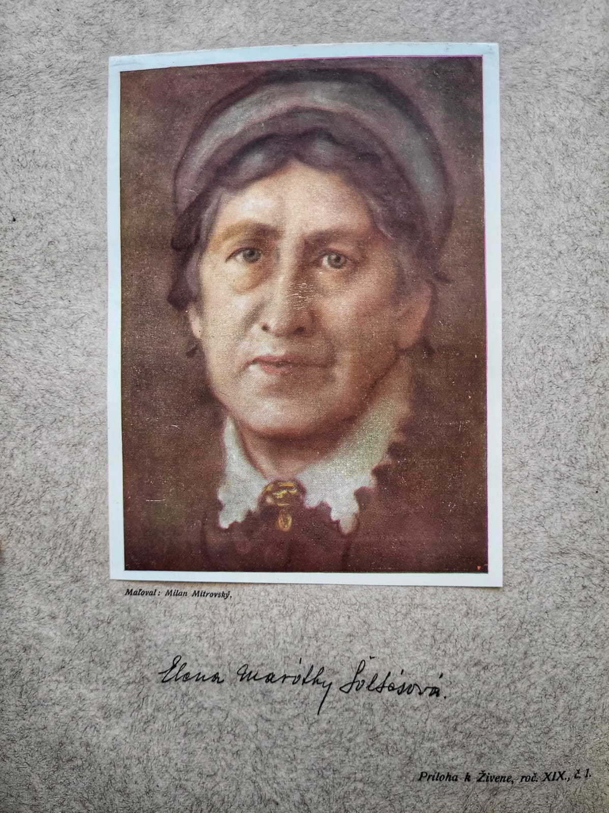
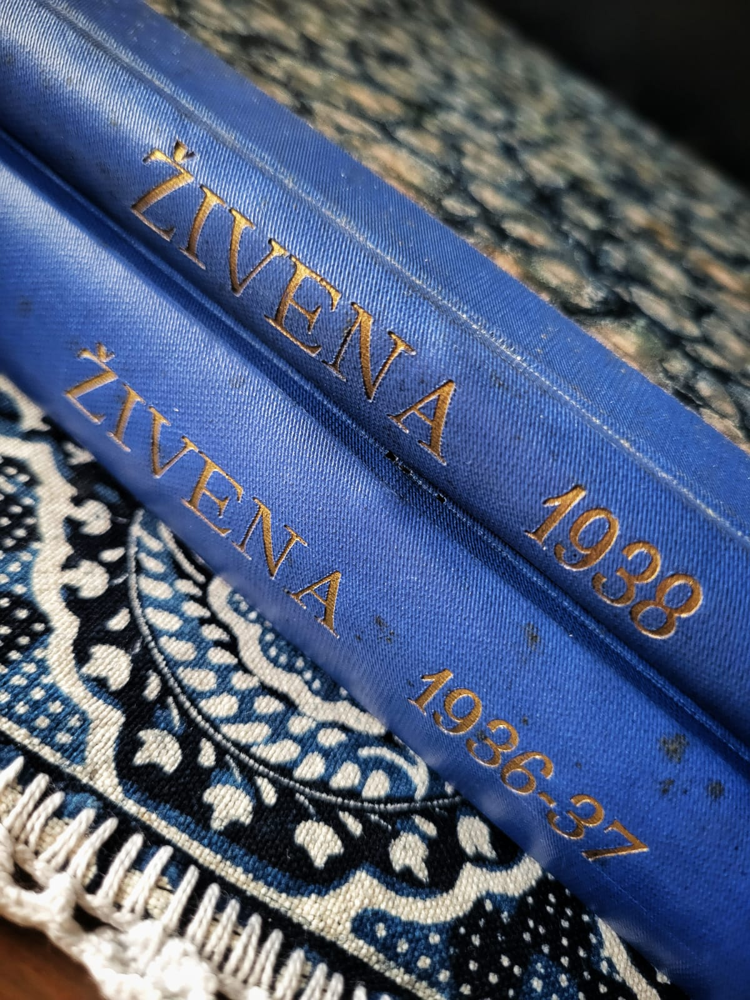

Príbeh · Živena
Živena
Spolok slovenských žien · 1869 – dodnes
Príbeh · Živena
Spolok slovenských žien · 1869 – dodnes

Elena maróthy Šoltésová
„My tiež máme túhu po vyššom a sme duchom obdarené od Boha; nedajmeže teda tomuto najvyššiemu daru zakrnieť, ale pestujme ho svedomite."
— Elena Maróthy-Šoltésová
Medzi výšivkami a krojovanými bábikmi, ktoré som objavila v pivnici po starých rodičoch, som našla aj dva zväzky starého časopisu Živena — ročníky 36–37 a 38–39. Boli tam starostlivo uložené, akoby ich niekto vedome odložil pre budúcnosť.

Aj vďaka týmto dvom letopisom Živeny, ktoré som tiež získala z pivnice po starých rodičoch, som sa preniesla v čase.
Keď som ich začala listovať, bolo to fascinujúce čítanie. Ide o ženský časopis — čo bolo na tú dobu samo o sebe prevratové. Nájdeme v ňom návody na starostlivosť o dojčatá, rady o výchove detí, recepty, cvičebné rubriky aj módne stránky. A práve v módnych rubrikách som narazila na meno Aranky Šenšelovej Hubkovej — švagrinej Anny Šenšelovej. Ďalšia nitka, ktorá spája moju rodinu s týmto svetom.
Zaujal ma aj jeden konkrétny článok — o ženách, ktoré chodili po slovenských dedinách zbierať staré výšivky a kroje. Mená v článku nie sú uvedené, ale s veľkou pravdepodobnosťou išlo o ženy z Lipy, možno aj o samotnú Annu Šenšelovú. Stretávali sa pritom s výsmechom — ľudia im hovorili, že také veci doma nemajú, že kroje dávno odovzdali handrárom a kto by to dnes nosil. Moderné vplyvy zo Západu sa v tom čase predierali do slovenských domácností a tradičná výšivka pomaly strácala miesto.
Nie je to trochu ako dnes? Práve preto si myslím, že príbeh Živeny nestratil nič zo svojej aktuálnosti.
Čo bola Živena
Živena vznikla 4. augusta 1869 v Turčianskom Svätom Martine. V dobe, keď slovenské ženy nemali právo na vzdelanie v rodnom jazyku, sa skupina národovcov a odvážnych žien rozhodla konať. Cieľom spolku bolo vzdelávať slovenské ženy — vo financiách, varení, výchove detí a kultúre. Na dobové pomery revolučný čin.
Na prvý pohľad sa môže zdať, že feminizmus a výšivka nemajú veľa spoločného. Opak je pravdou. Pre Živenu bola výšivka nástrojom boja — tichým, ale účinným. Spolok zberal vzory, organizoval výstavy a vzdelával vyšívačky. Nie z nostalgie, ale z presvedčenia, že zachovanie tradície je aktom národného odporu. A zároveň príležitosťou pre ženy zarobiť si vlastné peniaze.
Živena zakladala dievčenské školy a kurzy o varení, hygiene, výchove detí a vedení domácnosti. V roku 1919 otvorila vlastnú školu a v roku 1922 prvé jasle na Slovensku.
Už od roku 1887 organizovala výstavy slovenských výšiviek. Od roku 1895 systematicky zbierala kroje v spolupráci s Muzeálnou slovenskou spoločnosťou.
Almanach Živeny (1872), časopis Dennica (1898) a literárny spolkový časopis Živena (1910) — prvé ženské médiá na Slovensku, kde ženy písali pre ženy.
Živena úzko spolupracovala s Lipou a dala ženám možnosť premeniť tradičnú zručnosť na reálny príjem. Výšivka sa stala nielen kultúrnym, ale aj ekonomickým nástrojom.
História